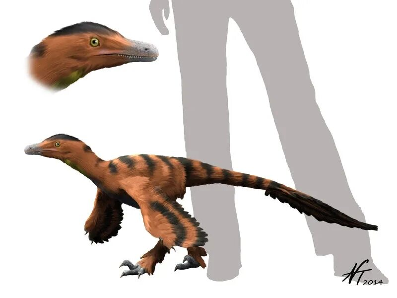
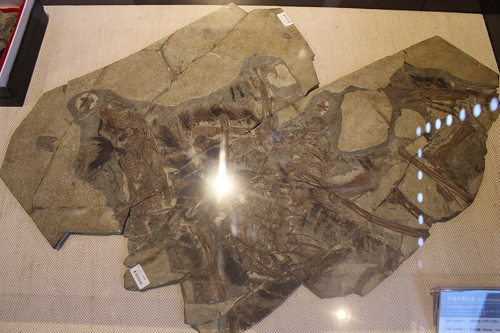
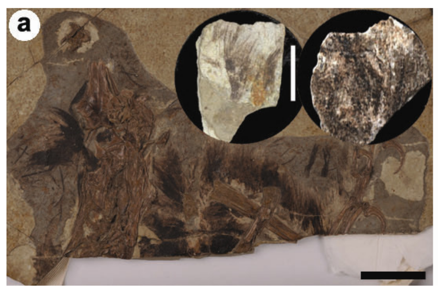

Early Cretaceous (~125 million years ago)
Liaoning Province, China
Yixian Formation, Jehol Biota
In specimen IVPP V12811, aggregations of both eumelanosomes (responsible for black and grey hues) and pheomelanosomes (responsible for reddish-brown tones) were identified. The analysis sampled the posterior region of the skull, portions of the neck, and a forelimb.
Scanning electron microscopy (SEM).

Reconstruction and size of Sinornithosaurus millenii.
Complete specimen IVPP V12811.
Part of specimen IVPP V12811 studied in Zhang et al. (2010).